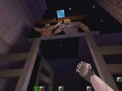

Map name: Action City 2
Map author: CryptR
Map filename: actcity2.zip
Reviewed by: DShaun; Wanderer; Timm Stokke; Cap'n Sparky (Chris Seamans); Bobby the Rookie; Dave Adam (Eraser<STS>); c98af; Deadlock, Wildcat
Review
Architecture Rating: 10/10
Architecture Comments:
I think that this map is layed out pretty damn well. I really like the secret room and that structure. There is also lots of detail here.
Looks Rating: 8/10
Looks Comments:
I think that it looks pretty good. I think that some of the textures on some of the buildings were a little overused, though.
Gameplay Rating: 10/10
Gameplay Comments:
There is something for everyone here. You always start at a place where you can snipe. Also, you can sneak up on some poor bastard in the dark, and blow his brains out/give him heart surgery with the handcannon, or the knives. Also, a great place for the M4 and MP5.
Ambiance Rating: 8/10
Ambiance Comments:
I think it feels like a small city, with the billboard and the rooms in the buildings. The streetlights also give it a little bit of that "feel"
Other Comments:
Not many servers run it on DM.
Conclusion:
A great map for Teamplay, lots of servers run it, and it is a lot of fun. Downliad it now!
Overall Rating: 10
Reviewed By: Wildcat
Review:
Action City 2 (Action City with a few minor changes) is in my opinion the best Action Quake2 map. The map is a small portion of a city, with a casino, a hotel, a parking garage, and other buildings. The map is great for many different strategies. There are great sniping spots, wide open spaces for pistol fights, and dark areas to hide with a shotgun. The map resembles, in more than one way, the city maps in Duke Nukem 3D, and I mean that in a good way. The map makes great use of hint brushes, so the map runs extremely well. And one other thing I love about this map: NO M4! I hate that thing.
I do have a few gripes with this map, however. There is too much of an emphasis on Tomb Raider -style jumping puzzles in some areas, expecially around the sniper rifle. I don't mind this type of thing in single player, but it's a pain in the ass to get capped in the head while you were trying to jump across the street onto a lamp post. Also, there's a certain respawn point that is really high up, and the only way down requires taking damage.
But in the end, those negative aspects are nothing in comparison to the postive aspects of this map. It's well balanced, runs really fast, and keeps the action in central areas. This is why i believe it is the current best map. Hell yeah.
-DShaun
Review:
One of the things that stood out the first time I played this was the ambience. It had a dark feel with the occasional flickering light. You could still see and that was the best part.
Warnining: It's all down hill from here so if you don't like constructive critisism leave.
In general I liked the map but there were somethings that stuck out that I had problems with.
The cartoonish feel of things. While it's cool and cut down on polies it did feel a little too cartoonish.
The lack of areas. While it was open and lots of places to go but there are a lot of doors that wouldn't open or were just there for decoration. This would be a much better map if the rest of buildings were filled in.
Other than that it's still a good map.
-Wanderer
Review:
I just wanna start off this review with props to the author.. I have never, and I mean NEVER had this much fun in a quake2 level in my whole entire life.. I've played this level for 2on2 and 3on3 teamplay for over 20 hours the last two days, and I gotta say, WOW!
First off, the level design is brilliant.. It "felt" very much like SinCity, the city dm level included with the Sin demo. Throw in a bit of Duke Nukem', and ActionCity is what you get. The level itself is small, but at the same time big.. well suited for up to 6 players in Teamplay -- Anything from 2-6 is probably a good number for deathmatches, tho I wouldn't know, as I am addicted to teamplay now, and there's no way I'm going back to DM =)
The only bad thing I have to say about this level, is that the white banners on the top of the hill can really get in the way sometimes.. But hey, it's just a small thing, no biggie.
The level plays extremely well, with very low r_speeds - the authors has used hint brushes very well here. It even plays well in software mode, and that isn't something you see everyday with action quake maps.
The textures all have that "city" feel to them, and they all fit in the game.. I only found one texture I didn't like, and that's the window texture, which has some sort of cartoon-ish feel to it. But I got over it pretty quick.
The lightning in this level is too cool! -- the night them suits this level very well. Colored lightning is used to make the "dark, blue" feel, so if you are the lucky owner of a 3d accelerator (like me =), this level is gonna kick even more ass for you.
Gameplay whise, I have nothing but good things to say about this level.. It's fast AND fun, what more could you want? 2on2 and 3on3 is really the way to go on this map. If you are short on players, 1on1 games should work well too.
Final words: ROCK! I hope the author makes another map like this. One of the best maps, if not THE best map I've ever played.
-Timm Stokke
Review:
Teamplay Review for Actcity2:
For those of you not familiar with this map, it is basically made up of a few intersecting streets with a number of buildings and structures along them. We have a construction site, a casino, stores, and a motel. The buildings are all small, one or two rooms at most, but you can find cover inside them and shoot out from the windows.
The look of the map is excellent, although some of the textures don't really make sense (the casino doors for example). It reminds me strongly of the level with the bank on it in Duke Nukem 3D (which isn't good or bad, mind you). The layout is mostly pretty good, with enough room to move around and enough cover to duck behind should you need it. Some of the doors look like they should go somewhere, and newbies to the map may be killed trying to open doors that don't lead anywhere.
The map itself runs very smoothly on my computer. I haven't checked the r_speeds, but it doesn't seem bad in that department at all.
My experiences with this map have made it one of my favorite maps for teamplay. The map is large enough to play tactically, but small enough that the last two players can't run around for too long without seeing each other. Sometimes spawning in teamplay is a problem (there's one table that people tend to get stuck in quite a bit, one window frame, and newbies who get stuck in the boxroom often can't figure out how to get out).
The teamplay I've seen on this map tends to be the most realistic, as the design of the map almost forces teams to stay close together (unlike the meandering corridors of Blockwar or Kumanru), and the small size of the building interiors lend themselves well to assault teams clearing them out.
Tactically, all of the weapons are useful on this map, and none really dominate too badly. Sniping spots exist, but their field of fire doesn't make sniping all too easy. The MP5 and M4 are extremely useful on this map, as they almost always are. Even the shotgun and handcannon are good for those building-clearing assaults.
All in all, this is a map that should be on the rotation of all teamplay servers, and gets an A+ from me for teamplay.
-Cap'n Sparky (Chris Seamans)
Review:
Hey all you good good people, Bobby's back after weeks of playing team action quake and sitting in my own feces but I have to say this is bar none one of the best action quake maps out there, especially for team play.
One of the key elements to this map is the look and design. The textures, effects and design harken back to the old days of Duke Nukem 3D, one of my favorite games of all time. The level is small, but not tight. There are a good share open areas and tight streets, catering to all play strategies.
While DM is great in this level this map truly shines in the squad bases Teamplay (go D/L v1.0 now if you don't have it already!) The level makes you truly feel you're in the midst of some mob war. Once again, the diverse design really comes into play again, with snipers clinging to the roof tops and shotgun maniacs running into the buildings, diversity of weapons is the key to win in this map, unlike so many others (Desert and Cliff quickly come to mind.)
Overall this map is great, there are very few good DM AND Team maps out there, but Action City pulls it off nicely.
-Bobby the Rookie
Review:
I started playing AQ2 not very long ago and this was the first map I downloaded. I have a pretty crappy computer,(a p166 w/2mb video ram)but despite this, actcity2 runs astonishingly well. I love almost everything in this level. Its not too big, it runs great, it isnt too dark and the weapons placement is great. Im glad that there is no M4 in this level. Now the newbies will have to fight with REAL guns. One thing that bugs me about this map is in the casino there is that boarded up section. It would be kinda cool if you could fight inside the casino. Hey, mabye in actcity3!
Over all Rating: 10/10
-Dave Adam (Eraser
Review:
There have been many rave reviews going around about the recent update to actctiy. And therefore I decided to play it and find out what the fuss is about.
1: Graphics. The textures are new, which gives a unique feel to the level. However, as has been mentioned before, build engine textures do not fit well into quake II. This guy pulled it off though, and only the windows look vaugly cartoonish. Software also looks good, and Gl rox as always.
2: Layout. The layout is a city block on a hill, and works out quite well. I like the billboards, although they have been done before. The weapon spread was good. One thing which was a let down was the false doors. I was confused for a minute when it first loaded, cuz I wondered why the big barn door wouldn't open. It makes the map seem more real, but really bugs players. Don't do it guys. Another thing was the hotel foyer. It is too easy to stand behind there with an automatic and just mow down anyone that comes in until you run out of ammo.
3: Gameplay. This makes or breaks a map. And this one is not full of it. There is no real pattern to run. Almost all the streets end on dead ends, and so if you are being chased you must turn and fight. (or u could use the knife/grenade over the head tactic, my favourite) Also, there are no real sniper spaces that aren't too easy to ambush, like the shop with the spiral stair case: Good location, but anyone can come up the stairs with a hand cannon and you go flying. This is good for some, bad for us snipers.
To wrap up, it is not ozing with style, or gameplay, but good for 5-10 players. Not excellent, but good....
-c98af
Review:
Hey All! This is my first review. I chose actcity2 because its so original
and its a real life setting. Actcity2 is awesome in DM (I like chucking the grenade out of the "stairs building), but when there is lots of people in the game it can get WAY too chaotic and thats when I leave the game usually; there's also usually a LAG causer that makes my game freeze.
Teamplay is my favourite on this level because you can have guys set up in sniping positions like across from "THE STAIRS BUILDING" and in the "Secret Room" as everyone calls it. BTW, the secret room is behind the poster in the stairs building, (just jumpkick the bottom left corner). What I hate about actcity2 is that there is some doors that cant open; they are just part of the wall and I just hate that! If I was gonna make another version I would actually make all the doors open, and I would put a few more buildings in with secret rooms and maybe an office building. I would also make the casino have some stuff in it rather than just a few boards blocking it off, and I would have the hotel place actually make the elevator work and it would be an actual hotel like blockwars for example.
The graphics in actcity2 are fine and they run well on my computer (I dont have a 3DFX card but I have a P166/MMX 16MB's of RAM) I like how the wall textures of the windows look like; it gives you that feeling that youre in some cool Action cartoon, but some people dont like cartoony graphics, but who cares.
Overall I give actcity2 a 7/10
its well worth the download...
-Deadlock